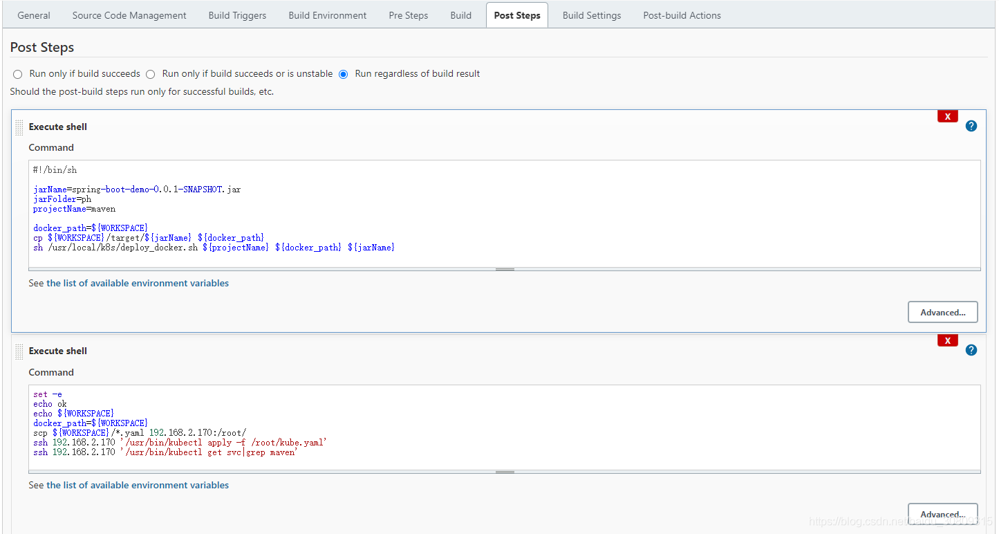

# centos registry+jenkins+k8s+maven 简单部署 (待续)
# node 节点安装 registry 并启动 registry
[root@node conf]# docker pull registry | |
Using default tag: latest | |
latest: Pulling from library/registry | |
ddad3d7c1e96: Pull complete | |
6eda6749503f: Pull complete | |
363ab70c2143: Pull complete | |
5b94580856e6: Pull complete | |
12008541203a: Pull complete | |
Digest: sha256:121baf25069a56749f249819e36b386d655ba67116d9c1c6c8594061852de4da | |
Status: Downloaded newer image for registry:latest | |
docker.io/library/registry:latest | |
[root@node conf]# docker images | |
REPOSITORY TAG IMAGE ID CREATED SIZE | |
chumingcheng/kube-demo latest e98023d7fb9b 8 hours ago 673MB | |
k8s.gcr.io/kube-proxy v1.21.3 adb2816ea823 2 weeks ago 103MB | |
registry latest 1fd8e1b0bb7e 3 months ago 26.2MB | |
hello-world latest d1165f221234 4 months ago 13.3kB | |
k8s.gcr.io/pause 3.4.1 0f8457a4c2ec 6 months ago 683kB | |
quay.io/coreos/flannel v0.11.0-amd64 ff281650a721 2 years ago 52.6MB | |
[root@node conf]# docker run -p 5000:5000 -v /home/registry_images:/var/lib/registry -d registry | |
149e8e17d7f1caa9aa3a01256fa462cb46c1f898613a42bcf4c3c62ee2e49050 | |
[root@node conf]# |
# 将 nginx 镜像下载下来后重新打 tag 后 push 到 registry 上 （测试）
[root@master docker]# cat /etc/docker/daemon.json | |
{ | |
"insecure-registries": ["192.168.2.174:5000", "registry-scu.cloudtogo.cn"], | |
"registry-mirrors": ["https://dcwzscc0.mirror.aliyuncs.com"] | |
} | |
[root@master docker]# systemctl daemon-reload | |
[root@master docker]# systemctl restart docker | |
[root@master docker]# docker pull nginx | |
Using default tag: latest | |
latest: Pulling from library/nginx | |
33847f680f63: Pull complete | |
dbb907d5159d: Pull complete | |
8a268f30c42a: Pull complete | |
b10cf527a02d: Pull complete | |
c90b090c213b: Pull complete | |
1f41b2f2bf94: Pull complete | |
Digest: sha256:8f335768880da6baf72b70c701002b45f4932acae8d574dedfddaf967fc3ac90 | |
Status: Downloaded newer image for nginx:latest | |
docker.io/library/nginx:latest | |
[root@master docker]# docker images | |
REPOSITORY TAG IMAGE ID CREATED SIZE | |
chumingcheng/kube-demo latest e98023d7fb9b 8 hours ago 673MB | |
kube-demo latest e98023d7fb9b 8 hours ago 673MB | |
chumingcheng/myhello latest dea3c5956e88 4 days ago 7.44MB | |
myhello latest dea3c5956e88 4 days ago 7.44MB | |
<none> <none> ad1e2da24557 4 days ago 303MB | |
nginx latest 08b152afcfae 10 days ago 133MB | |
mysql 5.6 eb0e825dc3cf 10 days ago 303MB | |
k8s.gcr.io/kube-apiserver v1.21.3 3d174f00aa39 2 weeks ago 126MB | |
k8s.gcr.io/kube-scheduler v1.21.3 6be0dc1302e3 2 weeks ago 50.6MB | |
k8s.gcr.io/kube-proxy v1.21.3 adb2816ea823 2 weeks ago 103MB | |
k8s.gcr.io/kube-controller-manager v1.21.3 bc2bb319a703 2 weeks ago 120MB | |
golang 1.14-alpine 32dc91e030ac 5 months ago 287MB | |
k8s.gcr.io/pause 3.4.1 0f8457a4c2ec 6 months ago 683kB | |
k8s.gcr.io/coredns/coredns v1.8.0 296a6d5035e2 9 months ago 42.5MB | |
k8s.gcr.io/etcd 3.4.13-0 0369cf4303ff 11 months ago 253MB | |
quay.io/coreos/flannel v0.12.0-amd64 4e9f801d2217 16 months ago 52.8MB | |
quay.io/coreos/flannel v0.11.0-amd64 ff281650a721 2 years ago 52.6MB | |
node 8.11.2 baf6417c4cac 3 years ago 673MB | |
[root@master docker]# docker tag nginx 192.168.2.174:5000/nginx:test | |
[root@master docker]# docker push 192.168.2.174:5000/nginx:test | |
The push refers to repository [192.168.2.174:5000/nginx] | |
e3135447ca3e: Pushed | |
b85734705991: Pushed | |
988d9a3509bb: Pushed | |
59b01b87c9e7: Pushed | |
7c0b223167b9: Pushed | |
814bff734324: Pushed | |
test: digest: sha256:3f13b4376446cf92b0cb9a5c46ba75d57c41f627c4edb8b635fa47386ea29e20 size: 1570 | |
----------------------------------------------------------------------------- | |
[root@node conf]# vi /etc/docker/daemon.json | |
[root@node conf]# systemctl daemon-reload | |
[root@node conf]# systemctl restart docker | |
[root@node conf]# cat /etc/docker/daemon.json | |
{ | |
"insecure-registries": ["192.168.2.174:5000", "registry-scu.cloudtogo.cn"], | |
"registry-mirrors": ["https://dcwzscc0.mirror.aliyuncs.com"] | |
} | |
[root@node conf]# |
# jenkins 创建 maven 项目，配置 Post Steps，在 build 好 jar 包后执行下面的 shell 脚本
#!/bin/sh | |
jarName=spring-boot-demo-0.0.1-SNAPSHOT.jar | |
jarFolder=ph | |
projectName=maven | |
docker_path=${WORKSPACE} | |
cp ${WORKSPACE}/target/${jarName} ${docker_path} | |
sh /usr/local/k8s/deploy_docker.sh ${projectName} ${docker_path} ${jarName} |
创建 deploy_docker.sh，主要是打包成 docker 镜像
#!/bin/sh | |
set -e | |
projectName=$1 | |
docker_path=$2 | |
appName=$3 | |
tag=$(date +%s) | |
sever_path=192.168.2.174:5000 | |
target_image=${projectName}:${tag} | |
echo ${target_image} | |
cd ${docker_path} | |
docker build --build-arg app=${appName} -t ${target_image} . | |
docker tag ${target_image} ${sever_path}/${projectName} | |
echo The name of image is "${sever_path}\/${target_image}" | |
docker push ${sever_path}/${projectName}:latest | |
docker rmi -f $(docker images | grep ${projectName} | grep ${tag} | awk '{print $3}' | head -n 1) |
再次设置一个 post steps，也是 shell 脚本，这里需要先设置 ssh 免密登录（让 node 可以免密登录 master）
set -e | |
echo ok | |
echo ${WORKSPACE} | |
docker_path=${WORKSPACE} | |
scp ${WORKSPACE}/*.yaml 192.168.2.170:/root/ | |
ssh 192.168.2.170 '/usr/bin/kubectl apply -f /root/kube.yaml' | |
ssh 192.168.2.170 '/usr/bin/kubectl get svc|grep maven' |

# 设置 jenkins 服务器到 k8s master ssh 免密登录，在 jenkins 服务器执行
[root@node k8s]# ssh-keygen -t rsa | |
Generating public/private rsa key pair. | |
Enter file in which to save the key (/root/.ssh/id_rsa): | |
Created directory '/root/.ssh'. | |
Enter passphrase (empty for no passphrase): | |
Enter same passphrase again: | |
Your identification has been saved in /root/.ssh/id_rsa. | |
Your public key has been saved in /root/.ssh/id_rsa.pub. | |
The key fingerprint is: | |
SHA256:beS3BCVUzK7nwhuur6L2ccGS3vQ4Ahmou+pFCoyXxHc root@node | |
The key''s randomart image is: | |
+---[RSA 2048]----+ | |
| .o+o | | |
| . . oo | | |
| + o E o. | | |
|oo o + o + .. | | |
|+.o.o o S +.o | | |
|.oo o + =.o.. | | |
|.. . + =.oo. | | |
| .. . .+ oo.. | | |
|=. ..o..o++o | | |
+----[SHA256]-----+ | |
[root@node ~]# ssh-copy-id -i ~/.ssh/id_rsa.pub root@192.168.2.170 | |
/usr/bin/ssh-copy-id: INFO: Source of key(s) to be installed: "/root/.ssh/id_rsa.pub" | |
The authenticity of host '192.168.2.170 (192.168.2.170)' can't be established. | |
ECDSA key fingerprint is SHA256:H8BPYcOWbGTnKmhOS9Try0D3gsMTziU9KO6Tnkae5lw. | |
ECDSA key fingerprint is MD5:84:95:f1:e2:89:8d:5e:87:dd:12:55:e8:1a:1c:db:b2. | |
Are you sure you want to continue connecting (yes/no)? yes | |
/usr/bin/ssh-copy-id: INFO: attempting to log in with the new key(s), to filter out any that are already installed | |
/usr/bin/ssh-copy-id: INFO: 1 key(s) remain to be installed -- if you are prompted now it is to install the new keys | |
root@192.168.2.170's password: | |
Number of key(s) added: 1 | |
Now try logging into the machine, with: "ssh 'root@192.168.2.170'" | |
and check to make sure that only the key(s) you wanted were added. | |
[root@node ~]# ssh root@192.168.2.170 # 测试免密登录 | |
Last login: Sun Aug 1 20:36:23 2021 from ps2021urjnjrmj.lan | |
[root@master ~]# exit | |
logout | |
Connection to 192.168.2.170 closed. | |
[root@node ~]# |
# jenkins build 时候报错，master/node 将 Dockerfile 里设置的这个 url 配到不安全的 registry 地址列表中予以通过
[test] $ /bin/sh /usr/local/tomcat9/tomcat9/temp/jenkins7299389644735256735.sh | |
cp: cannot stat ‘/root/.jenkins/workspace/test/target/spring-boot-demo-0.0.1-SNAPSHOT.jar’: No such file or directory | |
maven:1627883041 | |
Sending build context to Docker daemon 222.7kB | |
Step 1/4 : FROM registry-scu.cloudtogo.cn/ubuntu:jdk | |
Get https://registry-scu.cloudtogo.cn/v2/: dial tcp 106.75.145.94:443: connect: connection refused | |
Build step 'Execute shell' marked build as failure | |
ERROR: Maven JVM terminated unexpectedly with exit code 137 | |
Finished: FAILURE | |
[root@node ~]# cat /etc/docker/daemon.json | |
{ | |
"insecure-registries": ["192.168.2.174:5000", "registry-scu.cloudtogo.cn"], | |
"registry-mirrors": ["https://dcwzscc0.mirror.aliyuncs.com"] | |
} | |
[root@node ~]# systemctl daemon-reload | |
[root@node ~]# systemctl restart docker | |
[root@node ~]# docker ps -a | grep registry | |
149e8e17d7f1 registry "/entrypoint.sh /etc…" 32 hours ago Exited (2) 31 hours ago musing_swartz | |
[root@node ~]# docker start 149e8e17d7f1 | |
149e8e17d7f1 | |
[root@node ~]# docker ps -a | grep registry | |
149e8e17d7f1 registry "/entrypoint.sh /etc…" 32 hours ago Up 4 seconds 0.0.0.0:5000->5000/tcp, :::5000->5000/tcp musing_swartz | |
[root@node ~]# |
# 新问题，jenkins log 报 jar 包找不到... ...
Started by user test | |
Running as SYSTEM | |
Building in workspace /root/.jenkins/workspace/test | |
The recommended git tool is: NONE | |
No credentials specified | |
> /usr/bin/git rev-parse --resolve-git-dir /root/.jenkins/workspace/test/.git # timeout=10 | |
Fetching changes from the remote Git repository | |
> /usr/bin/git config remote.origin.url git://github.com/SincerelyUnique/SpringBootDemo.git # timeout=10 | |
Fetching upstream changes from git://github.com/SincerelyUnique/SpringBootDemo.git | |
> /usr/bin/git --version # timeout=10 | |
> git --version # 'git version 1.8.3.1' | |
> /usr/bin/git fetch --tags --progress git://github.com/SincerelyUnique/SpringBootDemo.git +refs/heads/*:refs/remotes/origin/* # timeout=10 | |
> /usr/bin/git rev-parse refs/remotes/origin/master^{commit} # timeout=10 | |
Checking out Revision a841fe9c20349a8d9ef523b6f0ad32e410a32687 (refs/remotes/origin/master) | |
> /usr/bin/git config core.sparsecheckout # timeout=10 | |
> /usr/bin/git checkout -f a841fe9c20349a8d9ef523b6f0ad32e410a32687 # timeout=10 | |
Commit message: "Update Dockerfile" | |
> /usr/bin/git rev-list --no-walk a841fe9c20349a8d9ef523b6f0ad32e410a32687 # timeout=10 | |
Parsing POMs | |
Established TCP socket on 46575 | |
[test] $ /usr/local/jdk/jdk1.8.0_301/bin/java -cp /root/.jenkins/plugins/maven-plugin/WEB-INF/lib/maven35-agent-1.13.jar:/usr/local/maven/maven3/boot/plexus-classworlds-2.6.0.jar:/usr/local/maven/maven3/conf/logging jenkins.maven3.agent.Maven35Main /usr/local/maven/maven3 /usr/local/tomcat9/tomcat9/webapps/jenkins/WEB-INF/lib/remoting-4.10.jar /root/.jenkins/plugins/maven-plugin/WEB-INF/lib/maven35-interceptor-1.13.jar /root/.jenkins/plugins/maven-plugin/WEB-INF/lib/maven3-interceptor-commons-1.13.jar 46575 | |
<===[JENKINS REMOTING CAPACITY]===>channel started | |
Executing Maven: -B -f /root/.jenkins/workspace/test/pom.xml clean package | |
[INFO] Scanning for projects... | |
[INFO] | |
[INFO] --------------------< com.example:spring-boot-demo >-------------------- | |
[INFO] Building spring-boot-demo 0.0.1-SNAPSHOT | |
[INFO] --------------------------------[ jar ]--------------------------------- | |
[INFO] | |
[INFO] --- maven-clean-plugin:2.6.1:clean (default-clean) @ spring-boot-demo --- | |
[INFO] Deleting /root/.jenkins/workspace/test/target | |
[INFO] | |
[INFO] --- maven-resources-plugin:2.6:resources (default-resources) @ spring-boot-demo --- | |
[INFO] Using 'UTF-8' encoding to copy filtered resources. | |
[INFO] Copying 1 resource | |
[INFO] Copying 0 resource | |
[INFO] 阿里云Maven中央仓库为阿里云云效提供的公共代理仓库，云效也提供了免费、可靠的Maven私有仓库Packages，欢迎您体验使用。https://www.aliyun.com/product/yunxiao/packages?channel=pd_maven_download | |
[INFO] | |
[INFO] --- maven-compiler-plugin:3.1:compile (default-compile) @ spring-boot-demo --- | |
[INFO] Changes detected - recompiling the module! | |
[INFO] Compiling 3 source files to /root/.jenkins/workspace/test/target/classes | |
[INFO] | |
[INFO] --- maven-resources-plugin:2.6:testResources (default-testResources) @ spring-boot-demo --- | |
[INFO] Using 'UTF-8' encoding to copy filtered resources. | |
[INFO] skip non existing resourceDirectory /root/.jenkins/workspace/test/src/test/resources | |
[INFO] 阿里云Maven中央仓库为阿里云云效提供的公共代理仓库，云效也提供了免费、可靠的Maven私有仓库Packages，欢迎您体验使用。https://www.aliyun.com/product/yunxiao/packages?channel=pd_maven_download | |
[INFO] | |
[INFO] --- maven-compiler-plugin:3.1:testCompile (default-testCompile) @ spring-boot-demo --- | |
[INFO] Changes detected - recompiling the module! | |
[INFO] Compiling 1 source file to /root/.jenkins/workspace/test/target/test-classes | |
[INFO] | |
[INFO] --- maven-surefire-plugin:2.18.1:test (default-test) @ spring-boot-demo --- | |
[INFO] Surefire report directory: /root/.jenkins/workspace/test/target/surefire-reports | |
------------------------------------------------------- | |
T E S T S | |
------------------------------------------------------- | |
[test] $ /bin/sh /usr/local/tomcat9/tomcat9/temp/jenkins4673465351159808518.sh | |
1 | |
2 | |
/root/.jenkins/workspace/test | |
cp: cannot stat ‘/root/.jenkins/workspace/test/target/spring-boot-demo-0.0.1-SNAPSHOT.jar’: No such file or directory | |
3 | |
maven:1627996064 | |
Sending build context to Docker daemon 250.9kB | |
Step 1/4 : FROM registry-scu.cloudtogo.cn/ubuntu:jdk | |
---> 599a3bee7783 | |
Step 2/4 : ARG app | |
---> Using cache | |
---> b1898e65eea7 | |
Step 3/4 : ADD $app app.jar | |
ADD failed: file not found in build context or excluded by .dockerignore: stat spring-boot-demo-0.0.1-SNAPSHOT.jar: file does not exist | |
Build step 'Execute shell' marked build as failure | |
ERROR: Maven JVM terminated unexpectedly with exit code 137 | |
Finished: FAILURE |